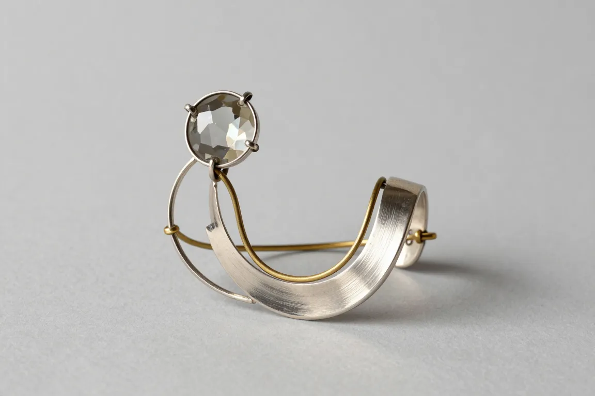

Маленькие скульптуры, которые носят, сделанные одним художником за верстаком. Материалы — серебро, латунная проволока и гранёный хрусталь, в абстрактных формах современного искусства, без оглядки на стоимость металла.

Главная идея
Украшение — маленькая скульптура. Художник делает его вручную из идеи формы, а металл и камни служат идее.
Принципы дизайна
Начинайте с абстрактной формы из современного искусства: мобиль, линия, плоскость или биоморфная форма.
Делайте каждую вещь вручную за верстаком и не больше нескольких каждого вида.
Берите скромный металл, такой как стерлинговое серебро, латунь или медь, и выбирайте его за форму, а не за стоимость.
Режьте камень по новому рисунку, например горный хрусталь с оптической линией, вырезанной под поверхностью.
Гните и соединяйте проволоку в открытую линию и считайте пустое место частью рисунка.
Держите вещь в одном жесте и в двух-трёх материалах.
Оставляйте следы руки и подписывайте каждую вещь клеймом.
Проектируйте вещь для тела: булавка, лежащая на лацкане, манжета, повторяющая руку.